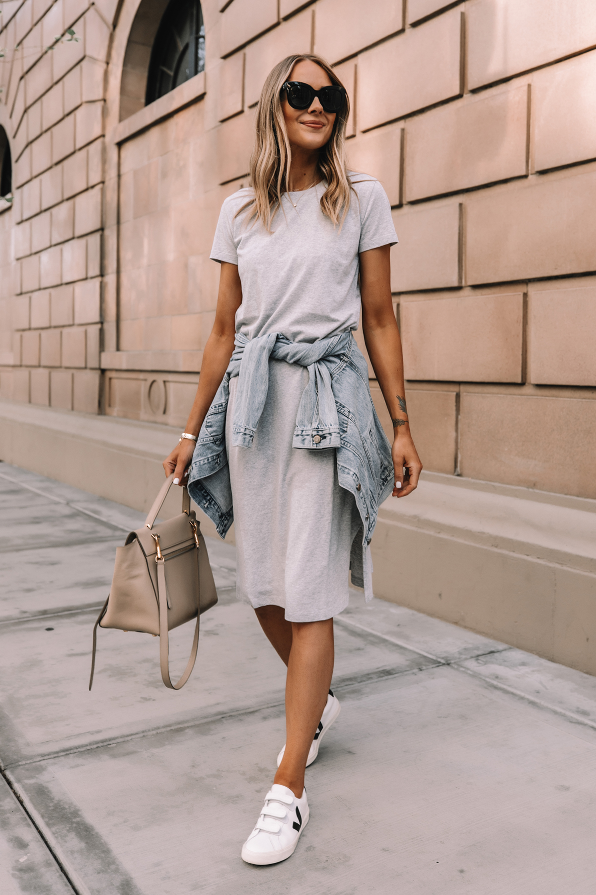

Casual Fashion focuses on comfort while still looking stylish. Jeans, Hoodies, Sneakers and t-shirts are essential pieces for everyday wear. Casual outfits are perfect for school, shopping, or spending time with friends.
Layering and colour matching help transform simple outfits into fashionable looks. Casual fashion allows creativity while maintaining comfort.
